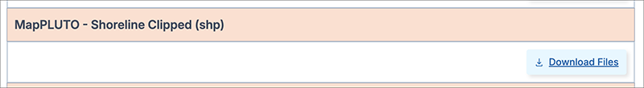
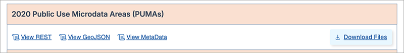
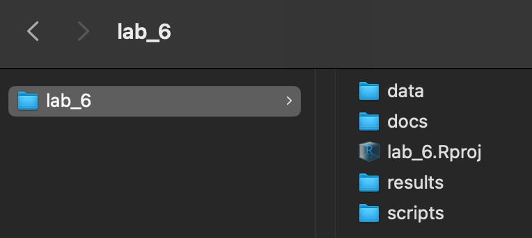
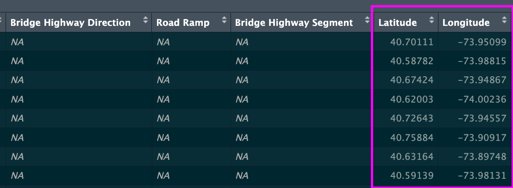
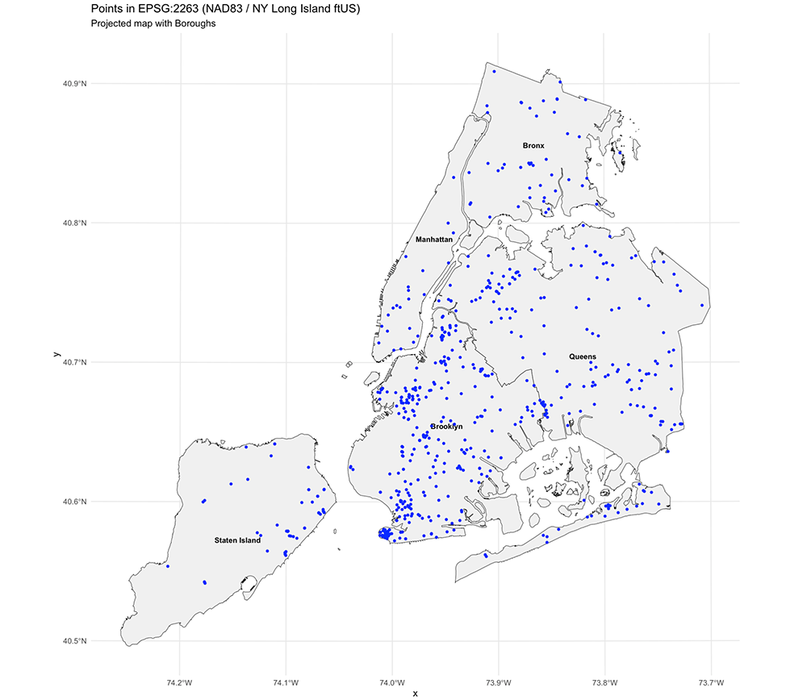
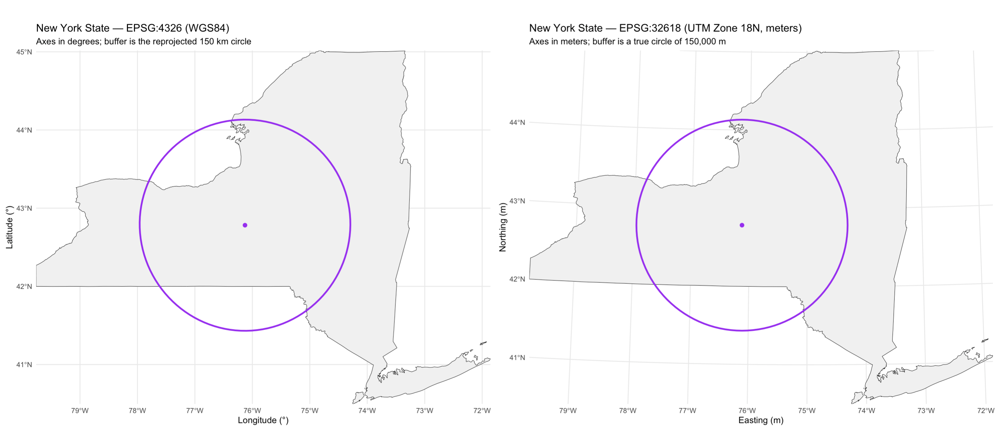
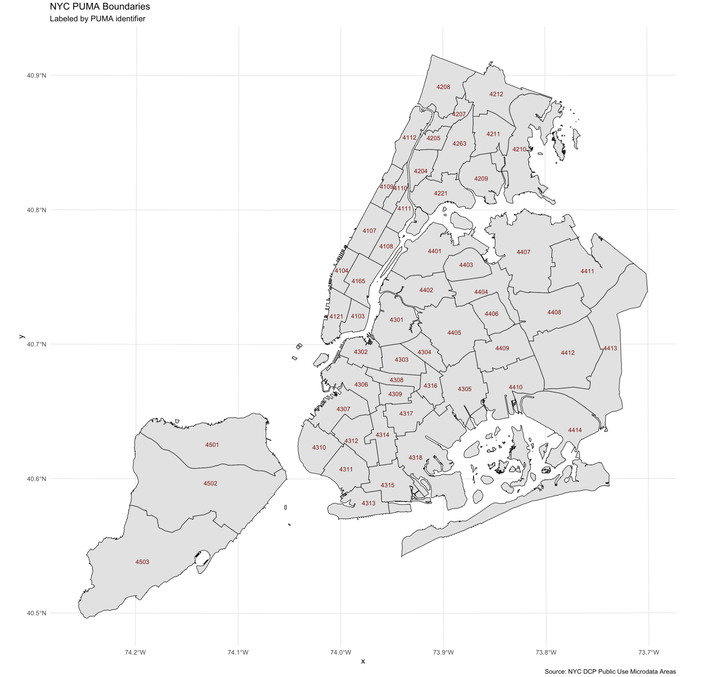
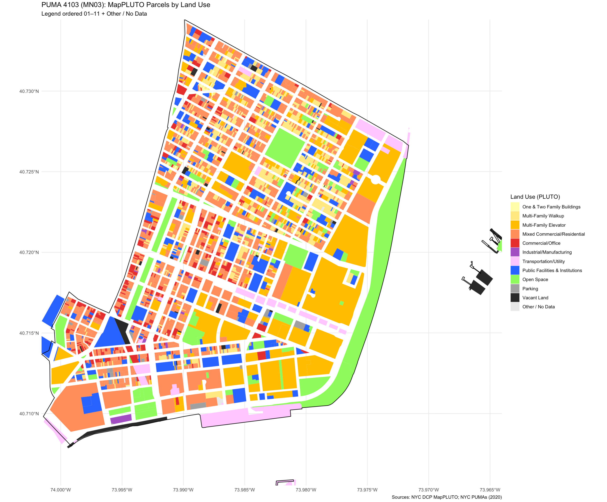

Class 6 Lab: R as a GIS | working with the sf package
Fall 2025 | Instructor: Stephen Metts | PGUD 5160 - CRN 2247
Preamble
In this sixth demonstration lab, we will continue to repeat the project setup phase of previous weeks (setting the working directory to lab_6) then move along to working with the sf package for vector features. This lab can and should be used in conjunction with this week’s assignment 6 deliverable - Assignment 6.
Data
In this week’s lab, we will first create a spatial object from 311 NYC data (Street Flooding Complaints) to demonstrate the basic syntax and functions of the sf package to read and map spatial features. Along the way, we will cover CRSs in R. Next, we will map New York State across two CRSs to demonstrate in more depth how the sf package handles coordinate systems.
In the third instance, we will move along to working with the NYC Parcel base known as MapPLUTO. We will utilize the PUMA geography that we have become accustomed to through past labs and assignments to ‘select’ from the parcel base just those parcels that are within a PUMA selection. In this way, we significantly decrease the master MapPLUTO dataset to a manageable size, creating a custom geography ready for further exploration and analysis at a neighborhood level.
The MapPLUTO .shp download appears as follows:

The NYC PUMAs .shp download appears as follows:

For lab_6, we will download a prepared data directory that has all necessary data for both this week’s lab as well as assignment:
This data subdirectory will be in .zip format; make sure to uncompress the directory before engaging it with this week’s scripts. Further, change the name from lab_6_data-subdirectory to simply data and place it into your lab_6 directory.
Step 1: Project Management in RStudio for lab_6 (also applicable for assignment_6)
As we have done for previous labs, we will create a lab_6 project directory:

A well-organized folder structure within an RStudio project is crucial. Common conventions include:
data/: For raw data (treated as read-only).
docs/: For documentation or R Markdown files.
results/: For outputs and generated results.
scripts/: For R scripts and analysis pipelines.
Step 2:
With the lab_6.Rproj established and the subdirectories for our data analyses established, we can print both the working directory and all the paths and files therein:
Your ‘upstream’ path will likely be different than Users/x15… if you are using macOS, your full path would be akin to /Users/your_machine_name/Desktop/lab_6. On macOS, this can also be expressed as ~/Desktop/lab_6:
The tilde ~ is a special character that acts as a shortcut for the current user’s home directory.
This is fine; we want to simply make sure that the directory we created - lab_6 is indeed the directory in which and from which we are and will be working.
Lab Demonstration #1 - Mapping Latitude & Longitude points (NYC 311 data) with the sf package:
For this first demonstration, utilize the following script in conjunction with the previous data subdirectory download.
Lab Script #1 - Mapping Latitude & Longitude points
Open the script from the scripts subdirectory: File>Open File>lab_6>scripts>c6_lab6-script-1.r
In the first step we read in the .csv data. If we review the .csv we’ll see that two columns exist for both Latitude and Longitude for each 311 NYC observation for street flooding.

.csv datasetNext, we convert these two columns into actual map points in using the sf package:
Next, we reproject the points from crs = 4326 to crs = 2263:
For context, we will also add the NYC borough boundaries which is a polygon geometry. Importantly, we are not reading in a .csv with locational data (latitude and longitude); rather, we use the sf package function st_read to create an sf object from the .shp format:
st_readcan read a wide range of spatial data formats, including shapefiles (.shp), GeoJSON (.geojson), KML (.kml), and data from spatial databases like PostGIS.
Finally, we move to ggplot and plot (or rather map) the points atop the borough boundaries:

Lab Demonstration #2 - CRS Comparison Mapping for NYS with the sf package:
For this second demonstration, utilize the following script in conjunction with the previous data subdirectory download:
Lab Script #2 - CRS Comparison Mapping for NYS
Open the script from the scripts subdirectory: File>Open File>lab_6>scripts>c6_lab6-script-2.r
To start, install then load the patchwork library which allows for multiple plots positioning within the same ggplot:
Using tidycensus, we will pull the geometry for NYS. Next, we make a second version using the CRS EPSG:3261 which is the UTM Zone 18 North which is typical for NYS data.
Next we create a buffer for the centroid of New York State, and allow for a second version in EPSG:4326. We then create to ggplot plot maps - one on CRS 4326 and the other on CRS 32618.
We will then discuss the results, giving attention to the way that the sf package handles the transformations; why one map CRS might be more appropriate than the other, and finally visually compare the results side-by-side:

sf package CRSsLab Demonstration #3 - PUMA Preview Map with the sf package:
For this third demonstration, utilize the following script in conjunction with the previous data subdirectory download:
Lab Script #3 - PUMA Preview Map for NYC
Open the script from the scripts subdirectory: File>Open File>lab_6>scripts>c6_lab6-script-3.r
To start, we will read in the nypuma2020.shp, transforming to an sf object. We will quickly inspect it, then plot the results.

In Assignment 6, you will need to make a determination for which PUMA you want to use for your map project at the PUMA geography. In addition to the resulting map, you can utilize the following PDF to find your chosen PUMA with GEOID linked to its text descriptor. Make sure to note that in the GEOID it is only the last 4 digits that are utilized in the nypuma2020.shp as these are only for NYC and the state signifier 36 is redundant.
Lab Demonstration #4 - Land Use (zoning) Mapping in NYC with the sf package:
For this fourth demonstration, utilize the following script in conjunction with the previous data subdirectory download:
Lab Script #4 - PUMA Preview Map for NYC
Open the script from the scripts subdirectory: File>Open File>lab_6>scripts>c6_lab6-script-4.r
This fourth demonstration will used as the basis for Assignment 6. In the script, we will utilized PUMA 4103 which translates as the target community district that we have been using in previous labs - the Lower East Side, Chinatown CD.
First, we load the necessary libraries, adding in the stringr library:
Next we load in the NYC PUMAs and the NYC MapPLUTO Landuse parcel dataset.
MapPLUTO merges PLUTO tax lot data with tax lot features from the Department of Finance’s Digital Tax Map (DTM) and is available as shoreline clipped and water included. It contains extensive land use and geographic data at the tax lot level in ESRI shapefile and File Geodatabase formats.
the MapPLUTO dataset is a significant memory load; we should expect up to several minutes of load time. The total size of the file as read into R is large with 856694 observations across a total of 95 variables.
With such a large size, we need to subset the MapPLUTO data to a smaller geography. For this lab we will use PUMA 4103; for your assignment, chose your own PUMA and set accordingly in the assignment script:
# ---- Select target PUMA (4103) ----
puma_4103 <- pumas %>% filter(PUMA == 4103)
# ---- (Speed) Crop PLUTO to PUMA bbox BEFORE spatial filter ----
pluto_crop <- st_crop(pluto, st_bbox(puma_4103))Next, we utilize the sf package to find those parcels that intersect with the chosen PUMA:
pluto_4103 <- st_filter(pluto_crop, puma_4103, .predicate = st_intersects) %>%
filter(!st_is_empty(geometry))As we move along to the ggplot component of the workflow, we first map just the parcels that intersect with PUMA 4103. Next we create a vector for the color space used by NYC Planning for Land Use in the MapPLUTO file. We also create at labels vector that equates the Land Use codes to their respective categorical, named values. Using tidyverse, we then force the raw numbers to factors with a length of two digits.
Before the final mapping, we create a frequency table and print it to the Console. Next, we load and utilize the gt library that we have used in past labs and assignments so that we can print a nicely formatted version of the table.
Finally, we set a map print extent bb <- st_bbox(puma_4103) and then move to the final step of the ggplot Land Use Map:

In the above map we see several parcels that are seemingly ‘outside’ PUMA 4103. Using the intersect function, any parcel that indeed intersects with the target PUMA is then selected. Another function crop is more exclusive and will clip the resulting parcels to the actual boundary of the target PUMA. Next week we’ll cover more functions of the sf package.
Concluding Remarks
In this sixth demonstration lab, we introduced the sf package, a primary R package used for GIS operations. Similar to last week, this week’s Assignment 6, script #3 and #4 will be the basis for the two assignment scripts used for your own chosen PUMA in NYC.
Access this lab as needed for review and preparation for Assignment 6.
Scripts & Backup Data:
Class 6 Lab 6 R Script #1 - open in your RStudio
scriptsFile>Open File>lab_6>scripts>c6_lab6-script-1.rClass 6 Lab 6 R Script #2 - open in your RStudio
scriptsFile>Open File>lab_6>scripts>c6_lab6-script-2.rClass 6 Lab 6 R Script #3 - open in your RStudio
scriptsFile>Open File>lab_6>scripts>c6_lab6-script-3.rClass 6 Lab 6 R Script #4 - open in your RStudio
scriptsFile>Open File>lab_6>scripts>c6_lab6-script-4.r
In script #2, a census pull is made for New York State geometry. In script #4, MapPLUTO - a very large file - is cropped to the PUMA boundary. If either or both of these processes fail, a backup of the census pull and cropped data is available in the following link. load("ny_4326.Rdata") and load("pluto_crop.Rdata") can be used once the data is placed into the lab_6 directory.